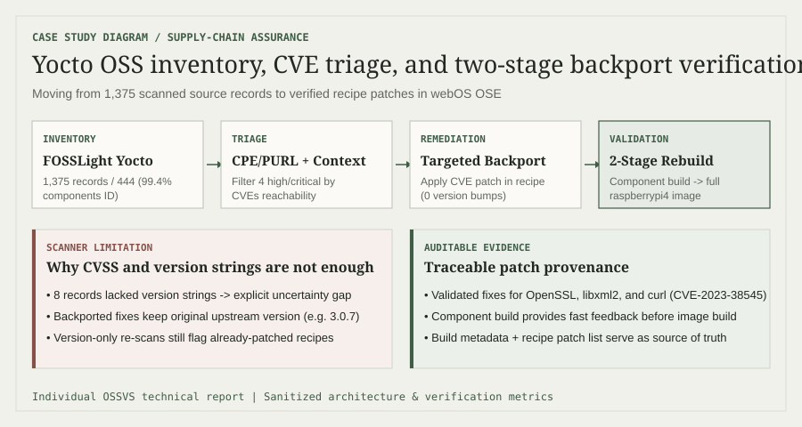

Individual technical report · August 2026
OSSVS: supply-chain vulnerability management
I evaluated an OSS vulnerability-scanning workflow for webOS OSE, converted scan results into a prioritized review, and backported three targeted fixes through component and full-image builds.
TargetwebOS OSE 2.20.1.g
ScannerFOSSLight 4.0.6
BuildYocto / OpenEmbedded
Platformraspberrypi4_64
01 / Problem
Detection is the start of supply-chain work, not the finish.
An embedded Linux image can contain hundreds of open-source packages assembled through recipes, patches, and transitive build dependencies. A useful workflow must identify those components reliably, map them to known vulnerabilities, account for backported fixes, and produce evidence that a remediation still builds in the target system.
Ownership
This case study is based on my individual OSSVS report. It is intentionally sanitized: raw screenshots, addresses, machine paths, and internal report material are not published.
02 / Pipeline
A traceable path from source tree to rebuilt image.
Yocto source→FOSSLight scan→OSS inventory→CVE triage→Backport patch→Component + image build

I used FOSSLight Yocto to extract package identity and version data from the webOS build context. CVE review then combined scanner output with package/version verification and patch status, rather than treating a severity score as an automatic production-risk verdict.
- Generate a source-component inventory with package names, versions, and identifiers.
- Normalize component identity for vulnerability matching through CPE/PURL-style metadata.
- Review high and critical CVEs for applicability and existing backports.
- Introduce focused recipe patches without changing upstream version labels.
- Validate the affected component, then rebuild the complete webOS image.
03 / Inventory
Coverage strong enough to support triage.
The remaining eight records matter: unknown versions weaken CVE matching confidence. Reporting the numerator and denominator keeps the coverage claim auditable and makes the residual gap visible.
04 / CVE triage
Four high-impact findings, reviewed in context.
| CVE | Component | Scanned version | CVSS | Outcome in report |
|---|---|---|---|---|
| CVE-2023-0286 | OpenSSL | 3.0.7 | 7.4 High | Triaged |
| CVE-2023-0464 | OpenSSL | 3.0.7 | 7.5 High | Patch validated |
| CVE-2022-40304 | libxml2 | 2.9.14 | 7.8 High | Patch validated |
| CVE-2023-38545 | curl | 7.82.0 | 9.8 Critical | Patch validated |
Risk nuance
CVSS communicates technical severity; it does not by itself prove exploitability or business impact in a particular image. Exposure, configuration, reachable code paths, compensating controls, and existing backports remain part of the decision.
05 / Remediation
Three backports, validated twice.
I added targeted patches for CVE-2023-0464, CVE-2022-40304, and CVE-2023-38545 to the relevant build recipes. Each fix was checked through a component build before rebuilding the complete webOS image, reducing feedback time without skipping system-level integration evidence.
Minimize integration risk
A focused upstream fix can be safer for a stable embedded branch than introducing the behavior changes of a broad version upgrade.
Version alone can mislead
Backported fixes preserve the original version string. A scanner that only compares versions may continue to flag a package, so patch metadata and build provenance are essential.
06 / Lessons
What this demonstrates.
This project connects security analysis with build engineering. I can move from a large scanner result set to a defensible shortlist, explain uncertainty, patch within Yocto/OpenEmbedded constraints, and verify that remediation integrates into the complete image.
The most important lesson is operational: vulnerability status is a property of source, patches, build metadata, configuration, and exposure—not a version string in isolation.
Next case study